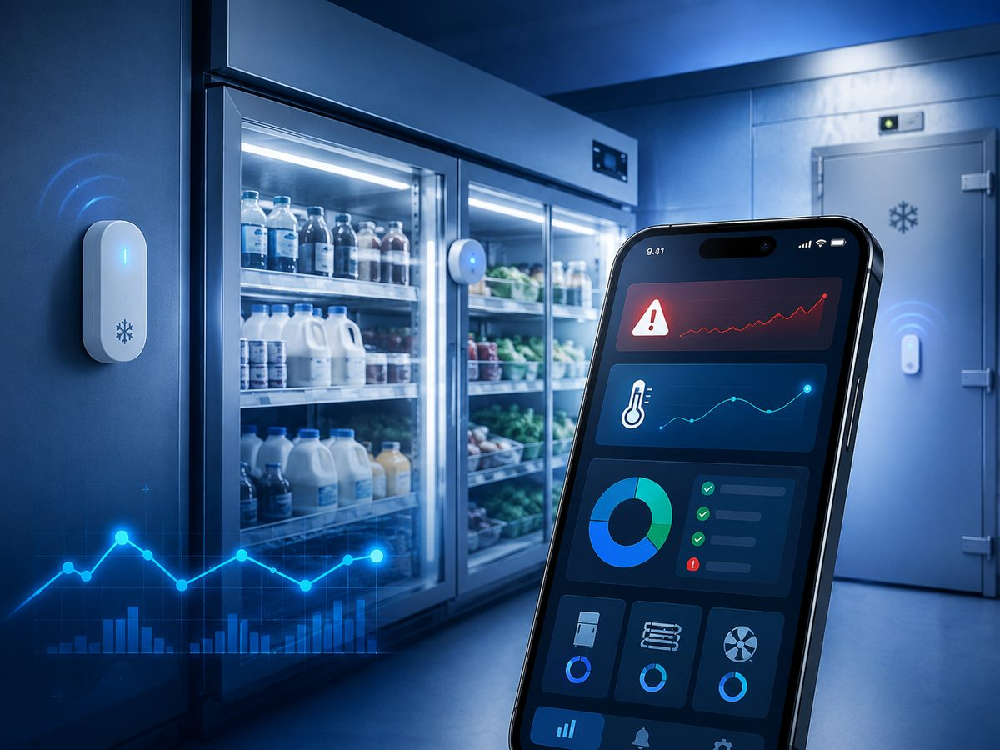
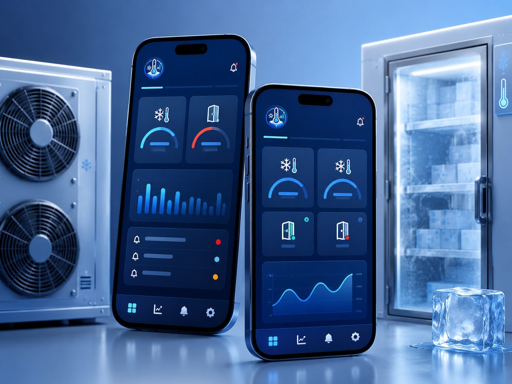
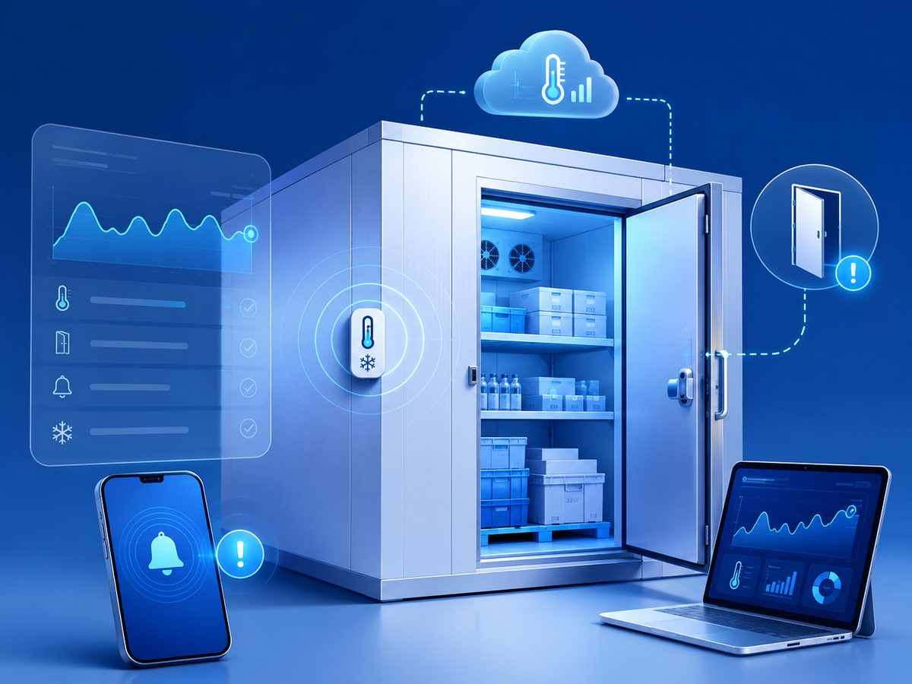
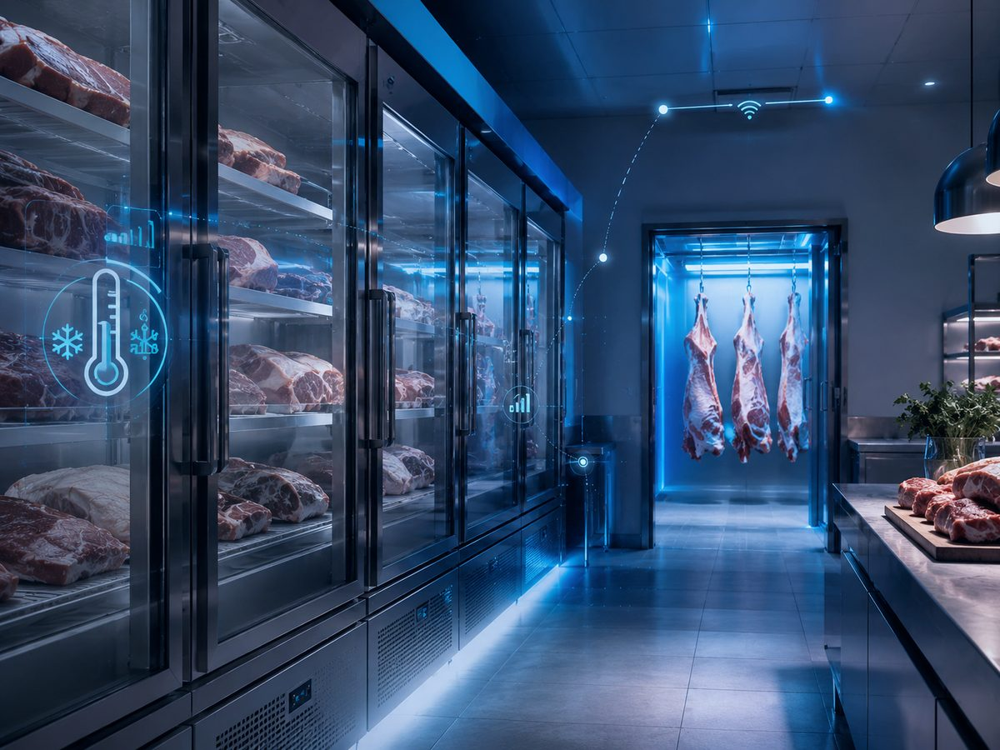

Problema
Sin trazabilidad de la cadena de frío, una heladera que se sale de rango de noche puede arruinar producto sin que nadie se entere hasta la mañana.
Monitoreo de temperatura en tiempo real para heladeras y cámaras comerciales, con alertas por WhatsApp y app móvil.

Sin trazabilidad de la cadena de frío, una heladera que se sale de rango de noche puede arruinar producto sin que nadie se entere hasta la mañana.
Producto protegido, cumplimiento de cadena de frío y respuesta inmediata ante fallas. En uso hace más de 1 año en La Macelleria.



Hago un piloto con tus equipos y umbrales.